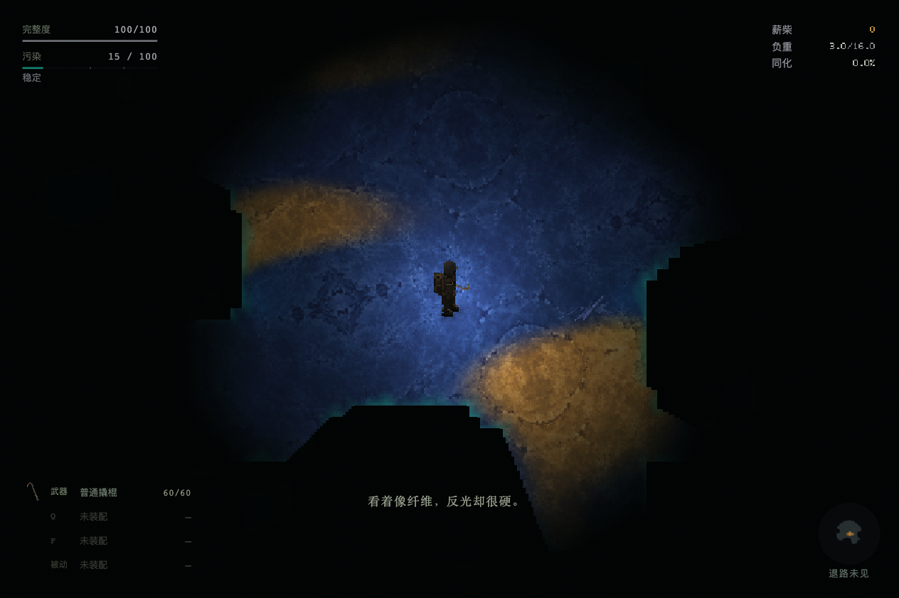
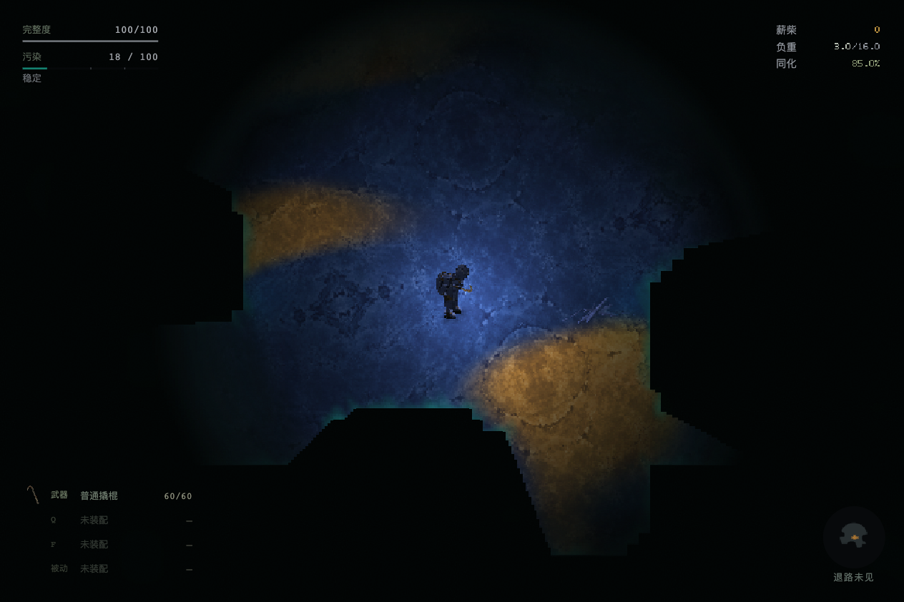
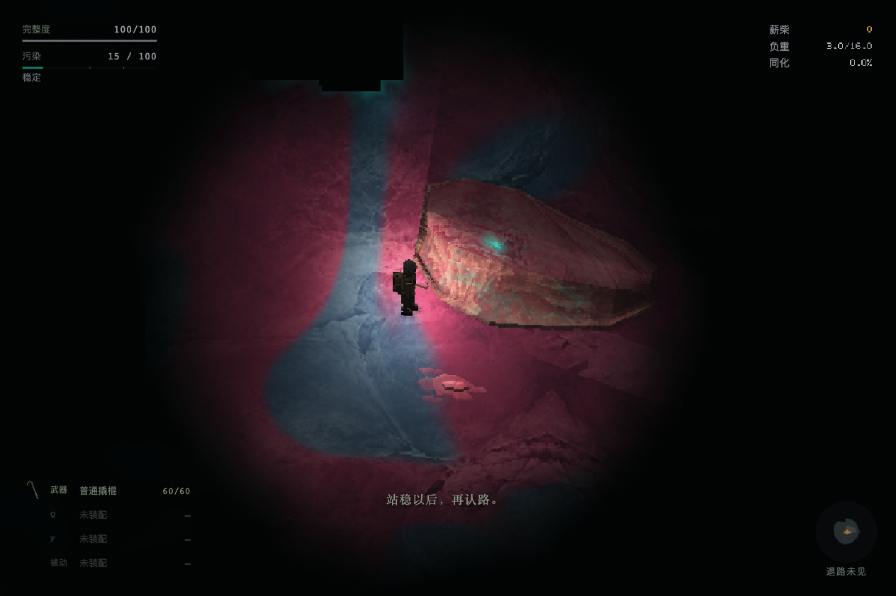
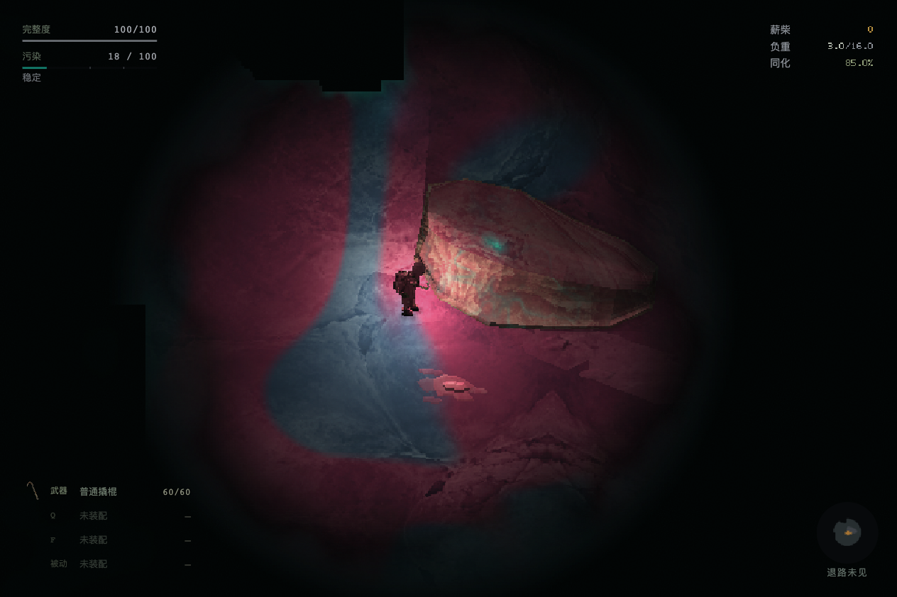
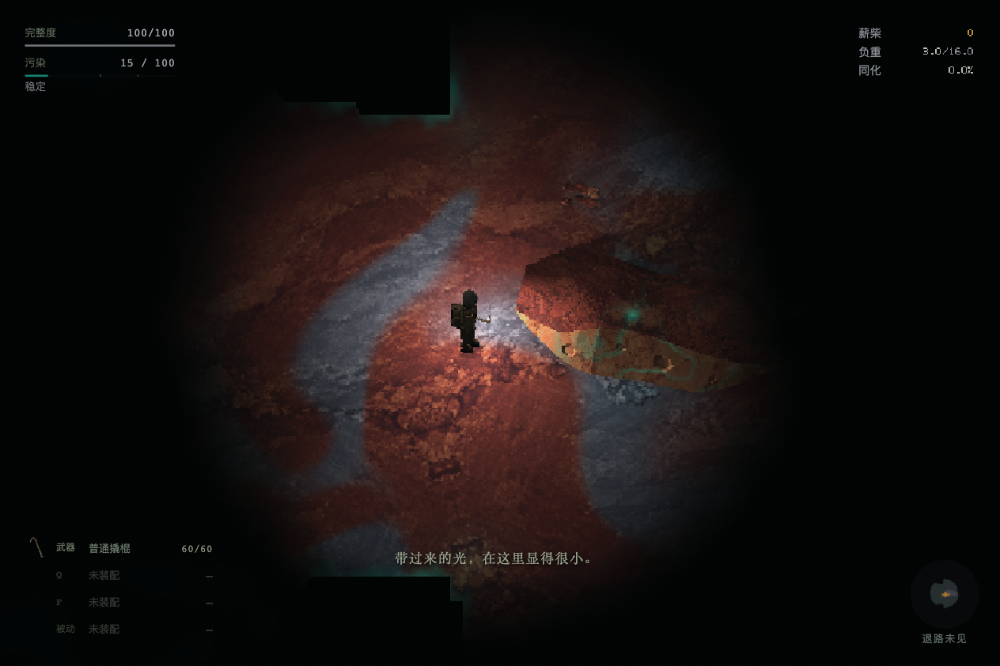
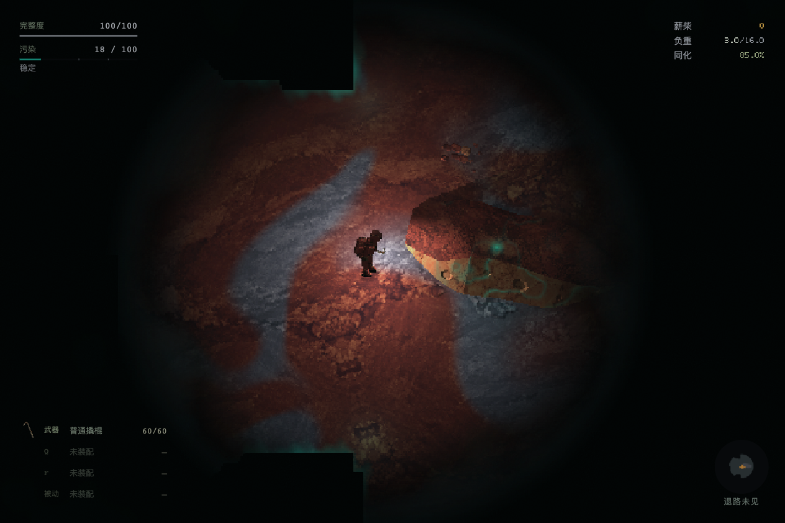
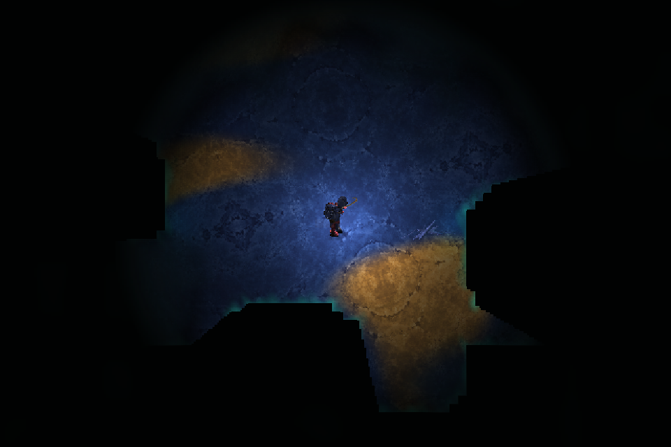

已接三开放世界与净化点。以下是实际持久A／来源谱驱动的画面，全部等待完整动作库就绪后截取；受控同化值用于验证，未修改用户存档。点击查看原图。







本机Chrome短采样：裂隙整库约5–6秒，净化点约14–22秒后台准备；期间保持准确动作和同化材料，完整形体就绪后切换。同页缓存复用。稳定阶段帧间隔P95约16.7–16.8毫秒；不代表GPU或长期性能认证。原工具失败与独立补验记录保留于coverage.json。